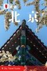

- 
- 北京>>
-
北京（Beijing），简称京，中华人民共和国首都、直辖市、国家中心城市、超大城市，全国政治中心、文化中心、国际交往中心、科技创新中心，是中国共产党中央委员会、中华人民共和国中央人民政府和全国人民代表大会的办公所在地。<<
北京位于华北平原北部，背靠燕山，毗邻天津市和河北省。北京的气候为典型的北温带半湿润大陆性季风气候。
北京是首批国家历史文化名城和世界上拥有世界文化遗产数最多的城市，三千多年的历史孕育了故宫、天坛、八达岭长城、颐和园等众多名胜古迹。早在七十万年前，北京周口店地区就出现了原始人群部落“北京人”。公元前1045年，北京成为蓟、燕等诸侯国的都城。公元938年以来，北京先后成为辽陪都、金中都、元大都、明清国都。1949年10月1日成为中华人民共和国首都。
2015年末，北京全市常住人口2170.5万人，比2014年末增加18.9万人。其中，常住外来人口822.6万人，占常住人口的比重为37.9%。2015年北京市实现地区生产总值22968.6亿元，比2014年增长6.9%。
添加计划